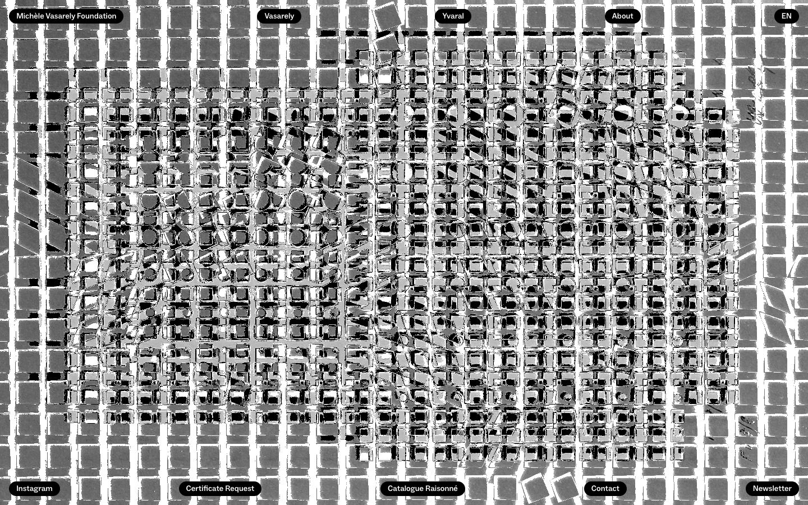

References / Website / 255
Michèle Vasarely Foundation website
The Michèle Vasarely Foundation’s home page: a full-screen black, white, and grey grid of squares that buckles and breaks, with small black pill buttons at the edges.
- Source
- vasarely.com
- Creator
- Michèle Vasarely Foundation
- Style
- Op art (agent-proposed, not yet reviewed by a person)
- Moods
- Vibrating, monochrome, archival
- Evidence
- Captured with
tools/capture.mjs(headless Chrome, 1440 × 900) on 28 September 2026 and inspected. The screenshot shows the first viewport; the measurement covers up to four screens. Nothing covers the page. - Reviewed
- Rights
- Third-party work, stored with credit for commentary. License: unverified. Rights policy
Observed
- The whole viewport is one image: a regular grid of grey squares separated by white lines.
- Inside a large central rectangle the squares shrink, tilt, and break into black and white fragments, circles, and rhombs, so the grid seems to buckle toward the viewer.
- A few pencil notes are visible at the right edge, so the image appears to be a scan of a drawing or study.
- Ten navigation links (Michèle Vasarely Foundation, Vasarely, Yvaral, About, EN; Instagram, Certificate Request, Catalogue Raisonné, Contact, Newsletter) sit in small black rounded pills with white sans-serif text along the top and bottom edges.
- There is no colour.
Why it belongs
This is the closest live match to the style’s web rules: one op field edge to edge, and text only on solid black panels, never on the pattern.
The measurement cannot see the pattern because it is an image: color.patternShare and surface.patternShare are 0, and the CSS lightness is 0.17 because the page ground is black behind the image. The screenshot palette gives lightness 0.57 and no hues.
The rounded pills are a modern interface habit that the op rubric neither asks for nor forbids.
Borrow
Use one black and white field as the full-screen ground and push all navigation to small solid-black labels at the edges.
Distort only a central area of a regular grid so that the rest of the field frames the effect.
Measured
Machine-extracted by tools/extract-traits.js on . Full measurement.
- Type families
- ABCSocial (100%)
- Median radius
- 0 px
- Mean chroma
- 0
- Palette
- #000000 83%
- #ffffff 17%

